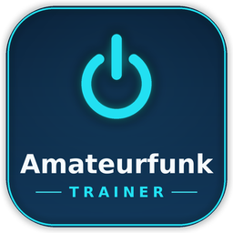
Der amtliche Fragenkatalog der Bundesnetzagentur für Klasse N, E und A. Mit einem eigenen Lösungsweg zu jeder Frage: nicht nur die richtige Antwort, sondern der Weg dorthin und der Grund dahinter.
Kostenlos · kein Konto · keine Werbung · läuft ohne Internet auf dem eigenen Rechner
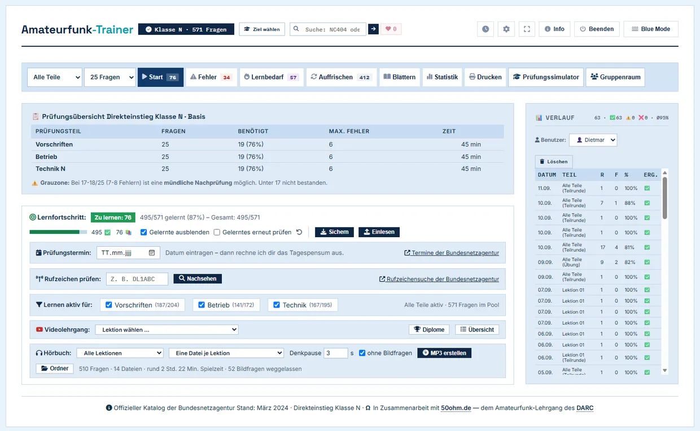
Wer in Deutschland eine Amateurfunkzulassung will, legt bei der Bundesnetzagentur eine Prüfung ab — Klasse N als Einstieg, darüber Klasse E und Klasse A. Geprüft wird aus einem amtlichen Fragenkatalog, und der ist öffentlich.
Der Amateurfunk-Trainer nimmt genau diesen Katalog (Stand März 2024) und macht ein Lernprogramm daraus. Er läuft auf dem eigenen Rechner unter Windows, Linux und macOS, braucht kein Konto und keine Verbindung ins Internet. Der Lernfortschritt bleibt dort, wo er entsteht.
Gebaut auch für alle, denen Lernen schwerfällt: Vorlesen, Hörbuch, Tastaturbedienung, größere Bilder und verlängerte Prüfungszeit. Dazu das Beste aus zwei Welten: ein eigener Lösungsweg zu allen 1750 Fragen und die Lösungswege des DARC direkt an der Frage.
Welche Klasse, wie die Prüfung abläuft, wo du dich anmeldest und was die Lizenz kostet – kompakt auf einer Seite, mit den Angaben der Bundesnetzagentur. Zum Ratgeber →
Du wählst im Programm, worauf du hinarbeitest. Alle vier Ziele sind vollständig erklärt — bei jeder einzelnen der 1750 Fragen steht, warum die richtige Antwort richtig ist und warum jede falsche falsch ist.
| Prüfungsziel | Was es ist | Fragen | Erklärt |
|---|---|---|---|
| Klasse N | Direkteinstieg, für Anfänger ohne Vorkenntnisse | 571 | 571 — alle |
| Klasse E | Direkteinstieg, mehr Technik und mehr Bänder | 1034 | 1034 — alle |
| N → E | Aufstockung, wenn Klasse N schon bestanden ist | 463 | 463 — alle |
| E → A | Aufstockung, wenn Klasse E schon bestanden ist | 716 | 716 — alle |
Vorschriften und Betrieb sind für alle Klassen gleich — die Klassen unterscheiden sich nur im Prüfungsteil Technik. Beim Aufstieg wird deshalb nur dieser Teil nachgeschrieben. Wer Klasse A anstrebt, geht den Weg N → E → A.
Das Fenster trennt die beiden Fälle, die in der Praxis dauernd verwechselt werden: Direkteinstieg — noch keine Bescheinigung, je höher die Klasse, desto mehr Technik kommt dazu — und Aufstockung — Bescheinigung vorhanden, nur die fehlende Technik, kein Vorschriften und kein Betrieb mehr. Jede Zeile sagt vorher, welche Prüfungsbögen dazugehören und wie viele Fragen zu lernen sind.
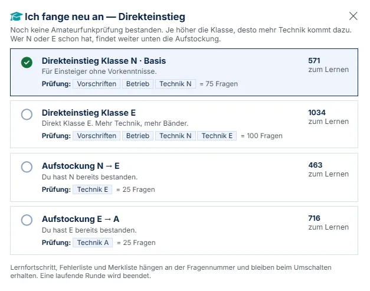
Falsch angekreuzt: die eigene Antwort rot, die richtige daneben. Links die Auswertung und der Fortschritt durch die Runde, unten die passende Stelle im Videolehrgang mit Zeitmarke.
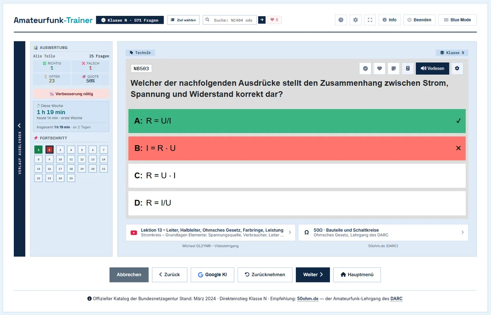
Zu jeder Frage führt ein Verweis auf die passende Stelle bei 50ohm.de, dem Amateurfunk-Lehrgang des DARC. Und wo der DARC einen gerechneten Lösungsweg veröffentlicht hat, steht auch der dabei: Formel, gegebene Werte, Schritt für Schritt. Welche Ausgabe geöffnet wird, richtet sich nach dem eingestellten Prüfungsziel — wer auf Klasse N lernt, bekommt die N-Fassung des Kapitels.
Die Seiten gehören dem DARC. Der Trainer verlinkt nur darauf und öffnet sie im Browser — als das, was sie sind: das Angebot des DARC. Ohne Netz unterbleibt der Versuch stillschweigend.
In der Prüfung wird die Formelsammlung der Bundesnetzagentur ausgehändigt — sie ist amtliches Hilfsmittel, kein Schummeln. Wer ohne sie übt, übt schwerer als die Prüfung ist. Bei jeder Frage, zu der es eine passende Stelle gibt, zeigt ein Knopf die Seite, und die betreffende Stelle ist hervorgehoben, der Rest abgedunkelt.
Das ist der eigentliche Punkt: Man sieht, wo im Blatt man ist, nicht nur was dort steht — in der Prüfung muss man die Stelle schließlich auch finden. Enthalten ist das vollständige Hilfsmittel samt IARU-Bandplänen und den Tabellen mit Frequenzbereichen und zulässigen Sendeleistungen. Rund 480 Fragen im gesamten Katalog haben einen solchen Hinweis.
Fragen abklicken kann jedes Programm. Der Trainer erklärt zuerst den Grund, warum etwas so ist — und erst danach den Kniff für diese eine Frage. Wer das Prinzip verstanden hat, kann die Frage auch dann, wenn sie in der Prüfung anders gestellt wird. Bei Rechenaufgaben steht der Weg mit jedem Zwischenschritt dabei, und zu jeder falschen Antwort ein Satz, welcher Denk- oder Rechenfehler genau dorthin führt.
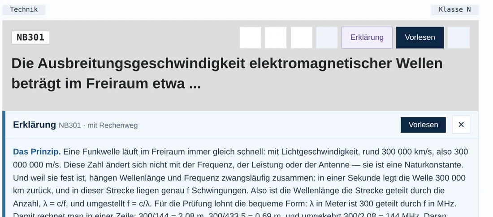
Ein Knopf öffnet die Erklärung in einem großen Fenster mit größerer Schrift. Ein zweiter liest sie vor, ohne dass sie aufklappt — Taste F8. Und ein dritter deckt die Lösung auf und nennt dabei den Buchstaben — Taste F9. Merkhilfe: F8 hört, F9 sieht.
Die Fragen sind gegen das amtliche PDF der Bundesnetzagentur geprüft — alle 1750, mit allen Antworten, Zeichen für Zeichen. Formelzeichen stehen so da wie gedruckt: Indizes tiefgestellt, Brüche mit Bruchstrich, Wurzeln mit Überstrich, Ω statt „Ohm". Und bei jeder Frage mit Textantworten ist die richtige Antwort wortgleich die amtliche.
Hinter den Erklärungen stehen 76 Begriffsblätter. Ein Blatt fasst ein Thema zusammen — oben das Prinzip, darunter die Begriffe, ein Merksatz und die Quelle. 834 Fragen hängen an einem dieser Blätter, und im Themenfenster siehst du für jedes davon deinen Stand. Das schwächste steht oben, und ein Klick startet eine Runde mit genau den Fragen dieses Themas.
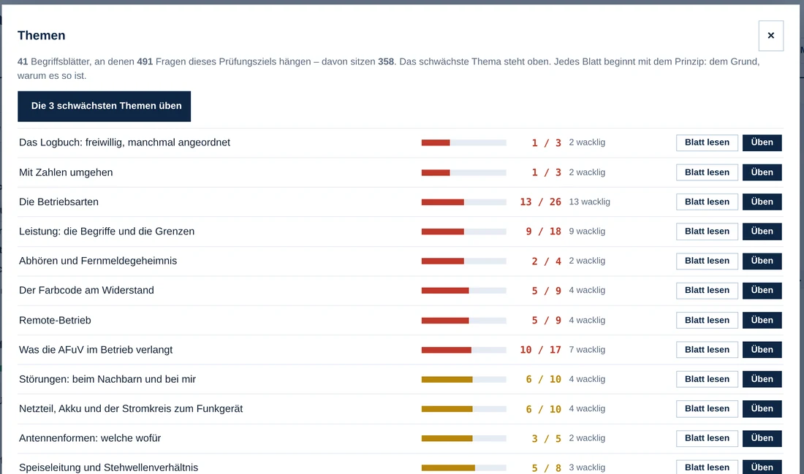
Echte Prüfungsbedingungen: 25 Fragen und 45 Minuten je Teil, 19 Richtige zum Bestehen. Die Grauzone von 17 bis 18 ist eigens ausgewiesen, weil dort die mündliche Nachprüfung greift. Der Technikteil der Klasse A hat 60 Minuten.
Welche Teile anstehen, entscheidet das gewählte Prüfungsziel — genauso wie bei der Bundesnetzagentur. Wer schon eine Bescheinigung hat, schreibt die alten Bögen nicht noch einmal:
| Prüfungsziel | Teile im Simulator |
|---|---|
| Klasse N · Basis | Vorschriften · Betrieb · Technik N |
| Klasse E | Vorschriften · Betrieb · Technik N · Technik E |
| Aufstockung N → E | nur Technik E |
| Aufstockung E → A | nur Technik A |
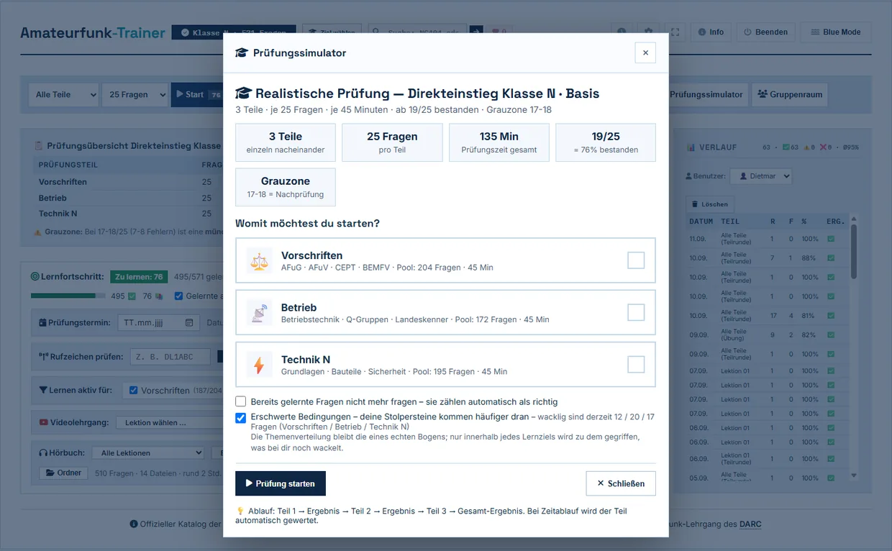
Getrennt nach Prüfungsteil: was gelernt ist, wie die Trefferquote über alle je gegebenen Antworten aussieht — nicht nur über die letzte Runde — und welche Fragen immer wieder danebengehen. Die Auffrischung meldet sich nach 3, 7, 21 und 60 Tagen von selbst.
Die Punktzahl je Prüfungsteil ist ein Mittelwert — und Mittelwerte verschweigen das Zittern: Wer im Schnitt 19,4 Punkte hat, besteht eben nicht immer. Der Trainer spielt deshalb zweitausend komplette Prüfungen durch: je Teil 25 Fragen aus dem Topf gezogen, für jede einzeln gewürfelt mit ihrer eigenen Trefferwahrscheinlichkeit. Bestanden zählt nur, wenn jeder Teil auf 19 Punkte kommt. Der Balken trägt die Farbe seines Wertes — rot bei zwei von zehn, gelb bei fünf, grün bei neun.
Darunter die Stolpersteine: die Fragen, bei denen du wiederholt danebenliegst, mit vollem Fragetext, der richtigen Antwort und einem Weg direkt in die Übung. Die 30 hartnäckigsten lassen sich am Stück vornehmen.
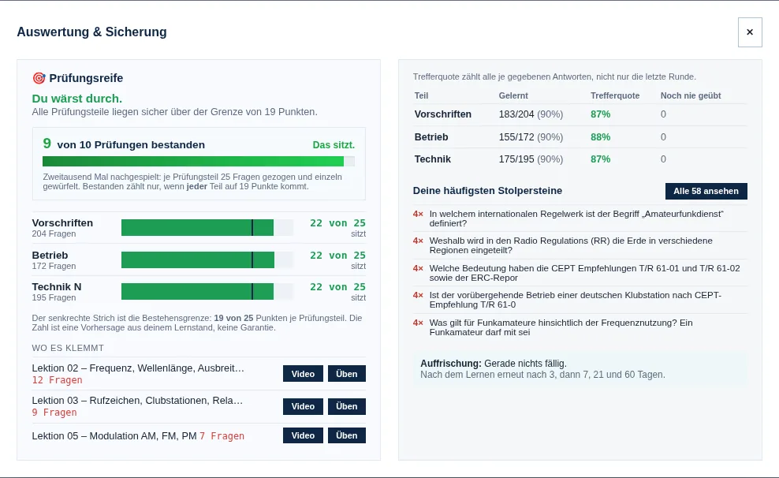
Jedes Begriffsblatt passt auf eine Seite. Oben steht das Prinzip, darunter die Begriffe und ein Merksatz. Auf den Blättern stehen bewusst keine Prüfungsfragen und keine Antworten — nur der Stoff. Für die Bahn, den Kurs oder den Küchentisch. Du kannst alle drucken oder nur die Themen, die bei dir noch wackeln.
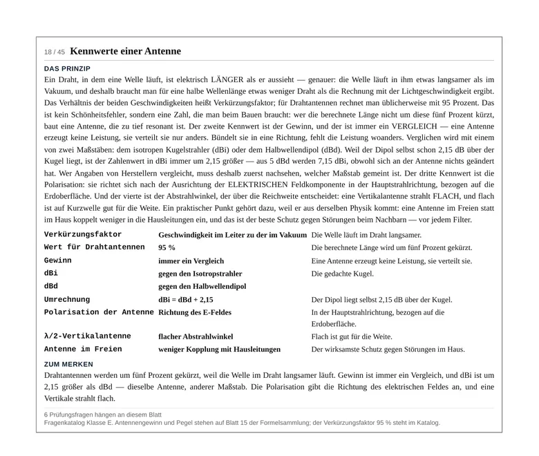
Für die Fahrt zur Prüfung oder den Abend davor im Hotel: ein Blatt Papier mit dem, was noch nicht sitzt. Oben steht, wo du stehst — Trefferquote je Prüfungsteil, wie viele Fragen dort wackeln, wie viele noch nie dran waren, und ein Satz dazu: „Am meisten hakt es bei Vorschriften — 64 % richtig, 12 wacklige Fragen." Wer im Hotel sitzt, hat den Trainer nicht dabei; ohne diesen Kopf wäre das Blatt eine Fragenliste ohne Einordnung.
Darunter die Fragen: Fragennummer, Frage, und nur die richtige Antwort — bei Bildfragen mit dem Bild, denn dort ist das Bild die Antwort. Die drei falschen fehlen mit Absicht: Wer auf der Fahrt zur Prüfung noch einmal quer liest, soll sich nichts Falsches einprägen. Zum Ankreuzen gibt es den Prüfungsbogen unter Drucken.
Wackelkandidat heißt: schon einmal falsch gehabt und noch nicht sicher gemeistert. Eine Frage, die man einmal daneben hatte und seitdem dreimal sicher konnte, gehört nicht mehr aufs Blatt — sie würde nur den Platz derer wegnehmen, die wirklich wackeln.
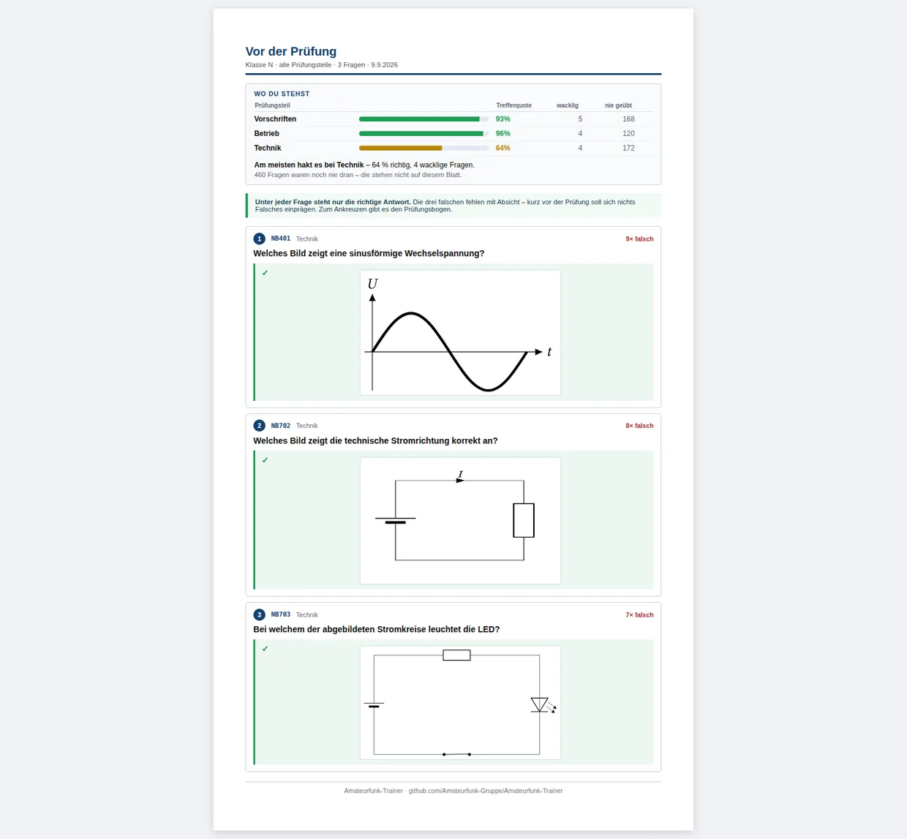
Die Sprachausgabe läuft lokal auf dem eigenen Rechner, ohne Internet, mit vier deutschen Stimmen zur Auswahl und einer Hörprobe. Abkürzungen werden vor dem Sprechen ausgeschrieben: aus „145 MHz" wird „145 Megahertz", aus „LAN" nicht „elan". Das Hörbuch macht daraus MP3-Dateien für den USB-Stick im Auto: Frage, drei Sekunden Stille zum Selbstantworten, richtige Antwort.
Die Amateurfunkprüfung ist eine schriftliche Prüfung am Bildschirm, und nicht jeder kann sie so ablegen, wie sie gedacht ist. Die Bundesnetzagentur trägt dem Rechnung: Nach der Amtsblatt-Verfügung 29/2024 sind Menschen mit Behinderung ihrer Behinderung entsprechende Erleichterungen bei der Prüfungsdurchführung zu gewähren. Der Trainer bringt alles, was sich davon üben lässt, an einer Stelle zusammen. Nichts davon ist vorgegeben, jede Funktion lässt sich einzeln an- und abschalten.
Wichtig, und im Trainer steht es genauso: Es gibt keine feste Zahl. In der Verfügung 29/2024 stehen nur die regulären Zeiten und der Satz zu den Erleichterungen. Wie viel mehr Zeit gewährt wird, entscheidet die Bundesnetzagentur im Einzelfall. Was hier eingestellt ist, gilt nur zum Üben und ist keine Zusage.
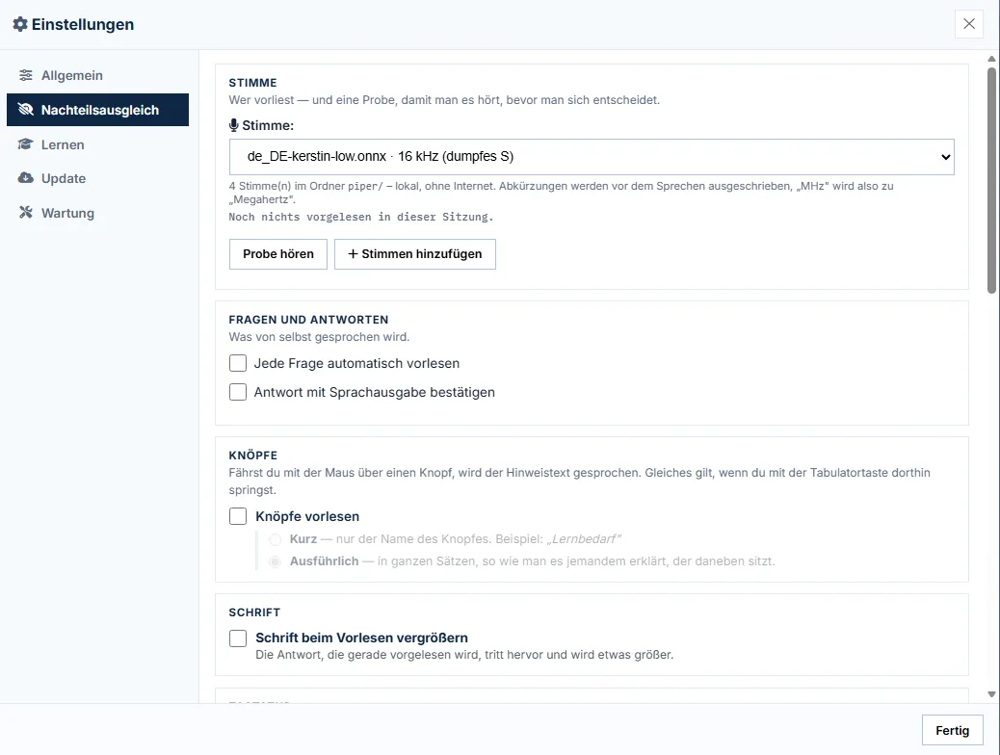
Der Trainer ist die passende Ergänzung für alle, die Amateurfunk unterrichten: im Ortsverband, an der Volkshochschule, im Verein. Der Ausbilder startet den Gruppenraum auf seinem eigenen Rechner und teilt einen Link. Mehr braucht es nicht.
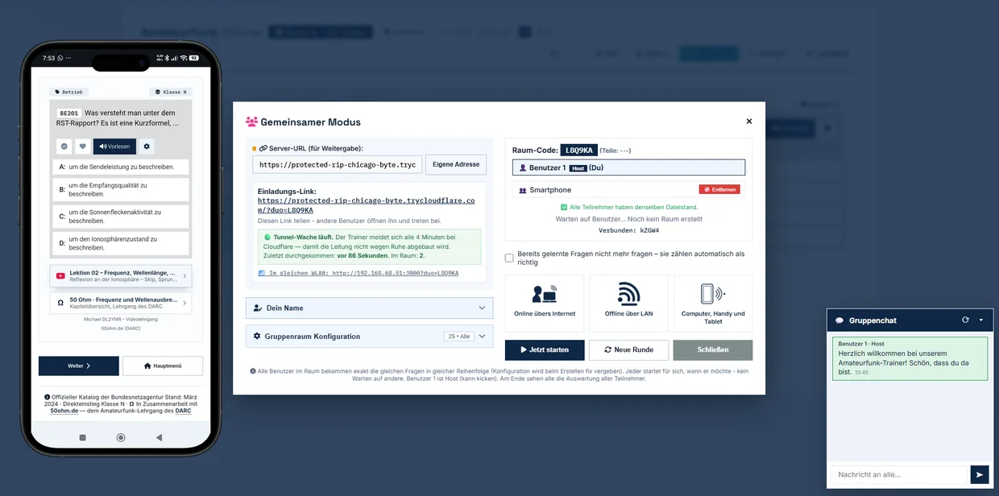
Die Rangliste am Ende einer Runde beantwortet wer war gut. Der Knopf Auswertung beantwortet die andere Frage — und die beantwortet man nicht mit Punkten, sondern mit den Fragen selbst.
Das Wertvollste daran ist nicht die Fehlerquote, sondern der gemeinsame Irrtum. Wenn sechs von acht dieselbe falsche Antwort wählen, ist das kein Streuverlust, sondern ein Denkfehler, den alle teilen. Genau der lässt sich am nächsten Abend geraderücken — und er steht im Klartext da:
Meist gewählt
Contest Query (3×)
Richtig
Allgemeiner Anruf
Dazu eine Zeile je Prüfungsteil, ein Vorschlag „Für den nächsten Abend" mit den Fragen, die mindestens zwei falsch hatten, und ein Ausdruck für die Kursmappe.
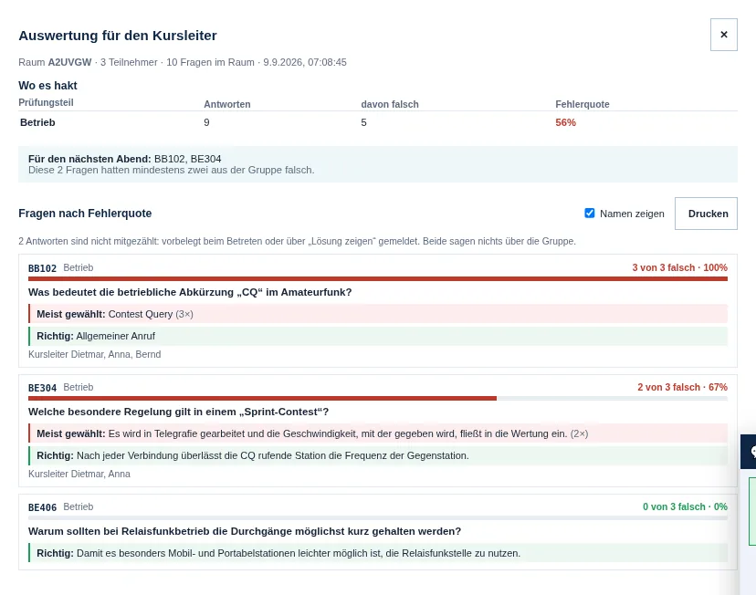
Online üben, am nächsten Kursabend gemeinsam besprechen: Für später sichern legt die Auswertung ab. Die Beamer-Ansicht füllt dann den Bildschirm mit einer Frage. Darunter, einzeln aufzudecken: was die Gruppe mehrheitlich gewählt hat, und was richtig ist — so überlegt der Kurs erst selbst. Weiter mit Leertaste, aufdecken mit Pfeil nach unten, Schluss mit Esc.
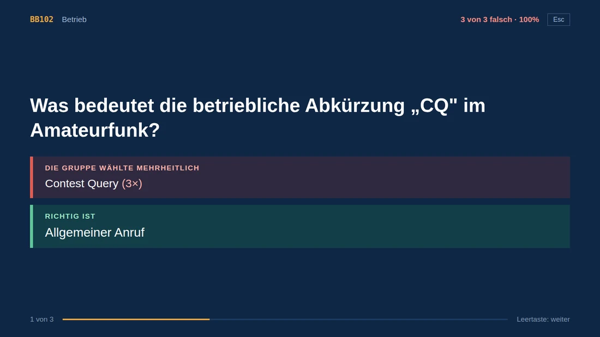
Unter Einstellungen → Benutzer bekommen bis zu zehn Plätze einen Namen. Ein Platz ist angelegt, sobald er einen Namen hat. Wer allein lernt, sieht weiterhin einen Eintrag und nicht zehn.
Jeder Platz hat seinen eigenen Lernfortschritt, Verlauf, Lernbedarf, seine Fehlerliste und Merkliste. Auch das Prüfungsziel gehört zum Platz: Ein Anfänger lernt auf Klasse N, ein Lizenzierter übt auf A — beim Wechsel stellt sich der Fragenkatalog mit um. Das ✕ entfernt nur den Namen; wer denselben Platz später wieder benennt, findet alles unverändert vor.
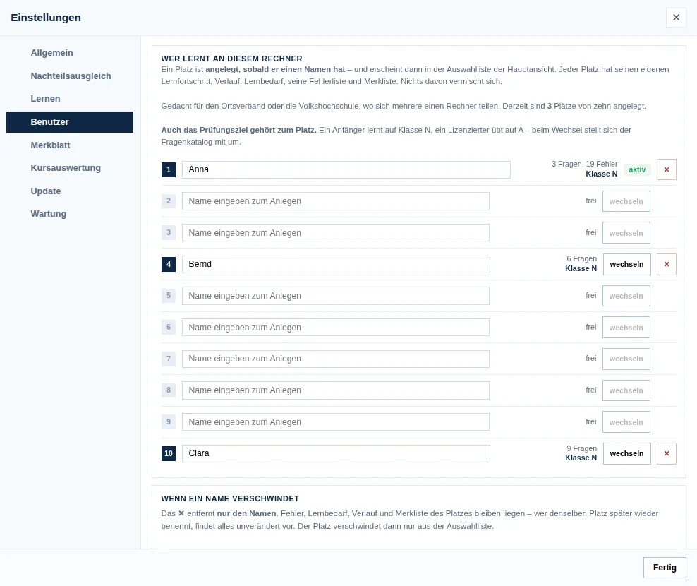
Der Trainer sieht beim Start selbst nach, ob auf GitHub etwas Neues liegt. Unterbrochen wird dabei nichts — kein Fenster springt auf, kein Balken legt sich über die Seite. Stattdessen wird der Info-Knopf oben rechts zum Update-Knopf: anderer Name, andere Farbe, und er blinkt. Ein Klick öffnet ein kleines Fenster mit zwei Knöpfen — Aktualisieren oder Später. Keine Dateinamen, keine Byte-Zahlen, keine Kästchen zum Ankreuzen.
Alle Fassungen liegen auf der Release-Seite. Such dir die für dein System aus —
mehr ist nicht nötig. Unter Windows ist es ein Archiv: auspacken, Ordner hinlegen,
wo du willst, START.bat doppelklicken. Kein Terminal, keine
Administratorrechte, nichts wird in Windows eingetragen. Linux und macOS brauchen
Node.js 18 oder neuer.
Lieber zusehen als lesen? Das Video zeigt es in zwei Minuten — herunterladen, entpacken, Verknüpfung anlegen, starten.
Der Lernstand bleibt beim Update erhalten — unter Windows im Ordner
data\ neben dem Trainer, unter Linux und macOS im eigenen Heimatordner.
Es gab eines. Auf Windows-11-Rechnern mit Smart App Control wurde es abgewiesen, bevor es anfing — nicht wegen seines Inhalts, sondern weil jedes Installationsprogramm sich beim Start in den Temp-Ordner auspackt und von dort startet. Genau das lässt diese Richtlinie bei einem Programm ohne gekaufte Unterschrift nicht zu, und dagegen hilft auch kein anderes Format.
Ein Archiv wird nur ausgepackt, nicht ausgeführt. Damit fällt die Blockade weg, die Rechteabfrage gleich mit — und es bleibt ein Weg, der überall funktioniert, statt zweier, von denen einer bei manchen scheitert.
Was bleibt, ist die Meldung des Browsers, die Datei werde „nicht häufig heruntergeladen". Das ist keine Virenmeldung, sondern eine Rufabfrage: Windows kennt die Datei noch nicht. Ein Handgriff erspart die nächste Warnung: vor dem Auspacken Rechtsklick auf das ZIP → Eigenschaften → Haken bei Zulassen → OK.
Und leg den Ordner an eine Stelle, an der du schreiben darfst — Schreibtisch,
Dokumente oder ein USB-Stick, nicht C:\Program Files. Der Trainer
speichert deinen Lernstand neben sich. Auf dem Stick wandert er mit.
Bei VirusTotal geprüft — kein einziger Fund.
Amateurfunk-Trainer-1.296.0-windows.zip, 336,96 MB, geprüft am 15.09.2026
von rund siebzig Virenscannern gleichzeitig:
„No security vendors flagged this file as malicious."
Ergebnis selbst ansehen →
Verlass dich nicht auf meinen Link, sondern auf deinen: Bei virustotal.com kostet das nichts und braucht keine Anmeldung. Und was hier nicht steht: „Schalte deinen Virenscanner aus." Wer das bei einem Download rät, gleich bei welchem, will nichts Gutes. Für Linux und macOS stellt sich die Frage ohnehin nicht — dort kommen die Pakete aus der Paketverwaltung des Systems.
Er ist kein amtliches Angebot und keine Garantie. Die Fragen stammen aus dem Katalog der Bundesnetzagentur, die Erklärungen sind dazugeschrieben und können Fehler enthalten — wenn dir einer auffällt, melde ihn gern über die Fehlerseite. Er ersetzt auch keinen Kurs: Löten, Antennenbau und der erste eigene Funkspruch stehen in keinem Fragenkatalog.
Und er schickt nichts weg. Dein Lernstand bleibt auf deinem Rechner; es gibt kein Konto, keine Anmeldung und keine Auswertung, die irgendwo anders landet.